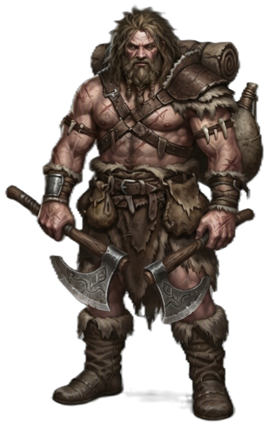

| Rolle | Verteidiger / Frontkämpfer · Spitzenschaden |
| Zauberertyp | Kein Zauberer Keine Zauberslots |
| Primärer Schadensattribut | Stärke (STR) |
| Sekundärer Schadensattribut | — |
| Zauberattribut | — |
| TP (L1) | 12 |
| TP pro Level | 7 |
| Rüstung | Mittel (alle Rüstungen) · Rüstungslos-Verteidigung |
| Waffen | Kampfwaffen (alle) |
| Rettungswürfe | Stärke (STR), Konstitution (CON) |
| Attributsteigerung (Level) | 4, 8, 12, 16 |
| Fertigkeiten (2 zur Auswahl) | Athletik, Einschüchtern, Wahrnehmung, Überleben, Tierführung, Naturkunde |
Der BARBAR ist die pure, ungezähmte Kraft — ein Frontkämpfer, der Schaden einsteckt und mit roher Wut zurückschlägt. Seine Wutanfälle machen ihn resistenter gegen physischen Schaden und verstärken seine Angriffe. Er ist kein Taktiker wie der KRIEGER, sondern ein Sturm aus Stahl und Muskel, der Gegner durch reinen Schaden und Einschüchterung besiegt.
| Level | Fähigkeit | Beschreibung |
|---|---|---|
| L1 | Wutanfall | Bonus-Aktion: +2 Schaden auf STR-Angriffe, Widerstand gegen physischen Schaden, 1 Minute. 2/Lange Rast (skaliert: 3@L6, 4@L12, 5@L15, 6@L17, unbegrenzt@L20). |
| L1 | Rüstungslos-Verteidigung | RK = 10 + Geschick (DEX) + Konstitution (CON) ohne Rüstung. |
| L2 | Wilder Angriff | Vorteil auf STR-Angriffe, Nachteil auf eigene RK. |
| L2 | Gefahrensinn | Vorteil auf DEX-Rettungswürfe gegen sichtbare Gefahren. |
| L3 | Urinstinkt | Urweg-Auswahl (Primal Path). |
| L5 | Zusatzangriff | 2 Angriffe pro Angriffs-Aktion. |
| L5 | Schnelle Bewegung | +10 ft Bewegungsrate. |
| L7 | Wildes Instinkt | Vorteil auf Initiative, kann nicht überrascht werden. |
| L9 | Brutaler Kritischer Treffer | +1 Waffenwürfel bei Krit (+2@L13, +3@L17). |
| L11 | Unerbittlicher Zorn | Bei 0 TP: CON-Rettungswurf (DC 10) um bei 1 TP zu bleiben. DC steigt pro Erfolg um 5. |
| L15 | Persistenter Zorn | Wutanfall endet nicht vorzeitig. |
| L17 | Persistenter Zorn (verbessert) | Wutanfall dauert bis Kampfende. |
| L18 | Unbeugsame Stärke | Passiv: STR-Wurf-Minimum. |
| L19 | Urkraft | Passiv: Stärke-Boost. |
| L20 | Urwildmeister | +4 STR/CON, Abschlussfähigkeit. |
| Fähigkeit | Aktion | Nutzung | Level | Beschreibung |
|---|---|---|---|---|
| Wutanfall | Bonus-Aktion | 2/Lange Rast | L1 | Aktiviere Wut: 10 Runden, +2/+3/+4 Schaden (L1/L9/L16), PHYSISCH Widerstand, Vorteil auf STR, blockt Zauberei. Ab L17 dauert der Wutanfall bis Kampfende. |
| Wilder Angriff | Bonus-Aktion | unbegrenzt | L2 | Vorteil auf STR-Angriffe für 1 Runde. Nachteil auf eigene RK. |
| Urschlag | Bonus-Aktion | unbegrenzt | L3 | PHYSISCH +1W6 Schaden auf nächsten Treffer. Nur während Wutanfall. |
| Wutangriff | Bonus-Aktion | unbegrenzt | L5 | PHYSISCH +1 Waffenangriff in diesem Zug. Nur während Wutanfall. |
| Wilder Sprung | Aktion | unbegrenzt | L5 | PHYSISCH Sprung-Angriff: Waffenangriff + 1W6 Schaden + freier Rückzug. |
| Wirbelangriff | Aktion | unbegrenzt | L7 | PHYSISCH Trifft alle Gegner in 10ft mit Waffenschaden. |
| Bodenslam | Aktion | unbegrenzt | L7 | Alle Gegner in 10ft müssen einen STR-Rettungswurf ablegen oder werden umgestoßen (liegend). |
| Einschüchterndes Brüllen | Aktion | unbegrenzt | L7 | Alle Gegner in 10ft müssen einen WIS-Rettungswurf ablegen oder werden 1 Runde verängstigt. |
| Schreckensbrüllen | Aktion | unbegrenzt | L13 | Alle Gegner in 30ft müssen einen WIS-Rettungswurf ablegen oder werden 1 Minute verängstigt. |
| Unaufhaltsame Kraft | Bonus-Aktion | 1/Kampf | L15 | PHYSISCH +2W6 Schaden auf alle Angriffe + Kritischer-Bereich 19-20 für 1 Minute. Nur bei niedrigen TP nutzbar. |
| Urkraft-Schlag | Bonus-Aktion | 1/Lange Rast | L20 | PHYSISCH Abschlussfähigkeit: +4W6 Schaden auf nächsten Angriff. |
| Fähigkeit | Beschreibung |
|---|---|
| Unerbittlicher Zorn | PASSIV Bei 0 TP: CON-Rettungswurf (DC 10) um bei 1 TP zu bleiben. DC steigt pro Erfolg um 5. |
| Wutgetriebene Resistenz | PASSIV Widerstand gegen physischen Schaden für 1 Minute. Nur während Wutanfall. |
| Ressource | Mechanik | Verfügbarkeit |
|---|---|---|
| Wutanfall-Nutzungen | 2/Lange Rast (3@L6, 4@L12, 5@L15, 6@L17, unbegrenzt@L20) | Ab L1, Lange Rast |